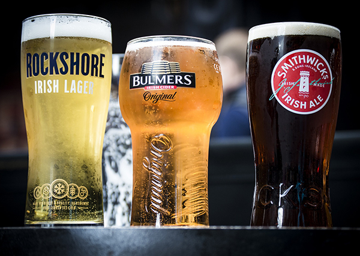
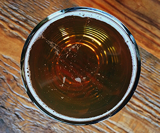
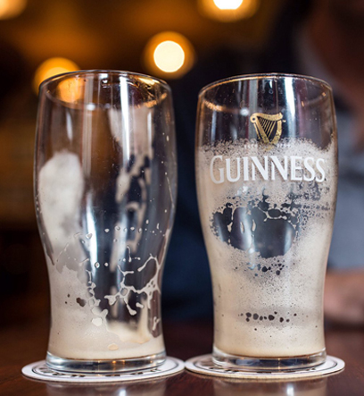

Lo Stile
Trova il tuo stile!
Come accennato nella home di questo sito web, dopo aver opportunamente letto le informazioni in Storia Birra, potete provare a scegliere uno stile birrario che più si avvicina ai vostri gusti! Questo piccolo test vi consiglierà una birra da poter bere secondo le vostre preferenze. Ovviamente essendo la birra un "universo" gastronomico, il test fornirà un piccolo campione preso da "un'infinità" di stili differenti!
Detto ciò buona bevuta!
(Clicca sull'immagine sotto per provare il test!)

Compila il test e scopri lo stile!
 Riprova il test!
Avanti